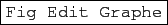
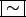
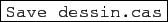
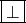
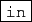
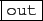
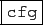

suivant: Comment régler le graphique
monter: La géométrie plane (2D)
précédent: La géométrie plane (2D)
Table des matières
Index
Que voit-on ?
On obtient un niveau contenant :
- en haut :
- la barre de menu de ce niveau de géométrie :
,
- le nom du mode dans lequel on se trouve. Dans tout les modes on peut
faire un zoom in ou out en tournant la molette de la souris (pour un zoom out
on tourne la molette vers soi),
- le bouton
 qui permet de choisir ce mode,
qui permet de choisir ce mode,
- Repere pour faire bouger, l'origine du repère selon le
déplacement de la souris. On peut aussi faire un zoom en choissisant la
fenêtre du zoom : avec un click droit de la souris on determine un sommet de
la fenêtre et on détermine la fenêtre en faisant bouger la souris en
laissant le bouton droit appuyé.
- Pointeur pour faire bouger, à la souris, les éléments de la
figure
- point pour dessiner, à la souris, un point,
- Lignes pour dessiner, à la souris, un segment, un vecteur,
une demi-droite, une droite, une parallèle, une perpendiculaire,
une médiatrice, une médiane, une bissectrice,
- Polygones pour dessiner, à la souris, un triangle ou
un triangle équilatéral, un carré, un quadrilatère,
- Cercles pour dessiner, à la souris, un cercle, un cercle inscrit,
un cercle exinscrit, un cercle circonscrit,
- Curves pour dessiner, à la souris, une ellipse, une hyperbole ou
avoir le graphe des solutions d'une équation différentielle en mode
interactif,
- Surfaces (3d) pour dessiner, à la souris, un plan, une sphère,
- Intersection pour avoir l'intersection de deux courbes,
- Approx pour faire de la géométrie avec des coordonnées
décimales,
- Exact pour faire de la géométrie avec des coordonnées exactes
afin de pouvoir faire des démonstrations,
- un bouton qui permet de choisir une couleur et qui indique la couleur
choisie et son numéro,
- un bouton qui fait apparaitre l'écran de configuration des attributs
pour les objets qui vont être crées. Cet écran permet de choisir les
attributs de la représentation des points et des lignes et il indique les
attributs choisis (on peut choisir d'avoir des points à coordonnées exactes
en décochant
, voir aussi 13.3).
Il faut savoir que l'on peut changer les attributs d'un point déjà crée (par exemple A) : il faut être
en mode point ou en mode Pointeur ( uniquement dans
ces 2 modes) et cliquer sur le point A avec le bouton droit
de la souris, pour faire apparaitre l'écran de configuration des attributs du
point A : si on coche la rubrique symb figurant sur cet écran
cela a pour effet de rajouter les deux lignes
assume(Ax=[2.1,-5.0,5.0]), assume(Ay=[1,-5.0,5.0])
et de définir automatiquement le point A avec les coordonnées
symboliques (Ax,Ay), si on coche la rubrique untranslate figurant
sur cet écran cela a pour effet de ramener le point A à sa position
initiale (i.e. sans avoir subit de translation).
- une case Step à cocher si on veut que les niveaux de
géométrie soient validés un par Enter car dans un écran de
géométrie, si Step n'est pas coché Enter valide la ligne et
les lignes suivantes,
- une ligne vide qui ne deviendra un bouton

qu'après une sauvegarde du niveau de géométrie (sauvegarde faite sous
le nom dessin.cas avec
Fig
 Sauver figure au format texte) qui a pour effet
de sauver les commandes qui sont à gauche de la figure.
Sauver figure au format texte) qui a pour effet
de sauver les commandes qui sont à gauche de la figure.
- au centre, une figure de géométrie plane interactive,
- à droite de cet écran :
- la position de la souris,
- des flèches sur fond de couleur pour déplacer le cadrage selon l'axe
de même couleur (la couleur bleu sert en 2D
à faire un zoom selon Oy),
- des flèches sur fond gris pour retrouver
les cadrages précédents,
- un bouton
 pour avoir un repère orthonormé
selon les valeurs de WX- et WX+,,
- des boutons
 et
 pour faire un zoom
avant ou arrière,
- un bouton
 pour configurer ce graphique (enlever ou
mettre les axes et modifier les paramètres de cadrage et de graduation des
axes) et choisir d'avoir les commandes et l'écran graphique l'un en dessous
de l'autreou côte à côte en cochant, ou pas,
Paysage,
- un bouton
avec les sous-menus :
- Voir (dont les items sont identiques aux boutons
situés au dessus),
- Trace donne le menu concernant la trace qui permet de dessiner la
trace d'un objet lorsqu'on fait bouger
un paramètre ou un point,
- Animation donne le menu concernant l'animation quipermet d'animer
une figure (cf les commandes animation et animate ou
animate3d)
- 3-d utile uniquement pour la géométrie 3D
- Exporter/Imprimer pour réaliser facilement l'insertion du
graphique dans un texte LATEXou autre,
- un bouton
||
permettant de faire une pause lors d'une animation graphique,
- un bouton auto pour régler automatiquement la fenêtre
graphique.
- à gauche de cet écran, une ligne de commandes de numéro 1 qui se
remplira automatiquement lorsque l'on crée un point en cliquant dans
l'écran graphique ou que l'on peut remplir avec une commande graphique ou
non. Chaque fois qu'une commande a été executée, une nouvelle ligne est
créée. Lorsqu'on modifie une ligne de commandes, toutes les lignes
qui suivent sont recalculées (ceci permet à la figure d'être
interactive).
Il n'y a pas de commande d'effacement de la figure,
en effet, soit on modifie les commandes
d'entrée, soit on fait un nouveau graphique en ouvrant un écran de
géométrie sur un autre niveau.
suivant: Comment régler le graphique
monter: La géométrie plane (2D)
précédent: La géométrie plane (2D)
Table des matières
Index
Documentation de giac écrite par Renée De Graeve